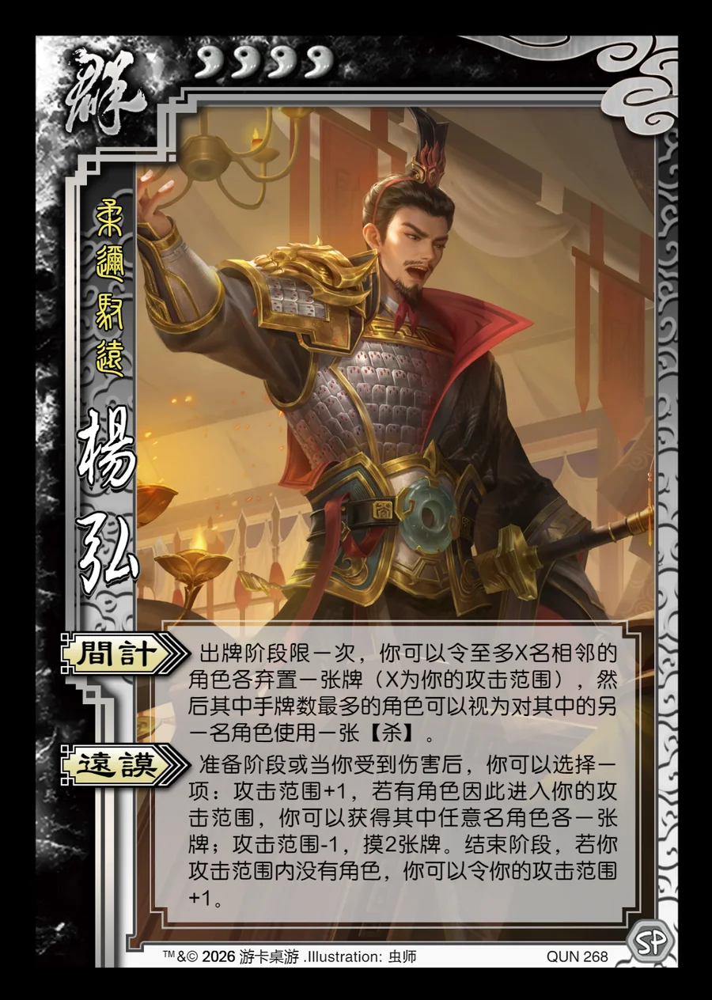

点击卡面查看大图
群
杨弘
♥4柔迩驭远
间计
出牌阶段限一次，你可以令至多X名相邻的角色各弃置一张牌（X为你的攻击范围），然后其中手牌数最多的角色可以视为对其中的另一名角色使用一张【杀】。
远谟
准备阶段或当你受到伤害后，你可以选择一项：攻击范围+1，若有角色因此进入你的攻击范围，你可以获得其中任意名角色各一张牌；攻击范围-1，摸2张牌。结束阶段，若你攻击范围内没有角色，你可以令你的攻击范围+1。

点击卡面查看大图
柔迩驭远
出牌阶段限一次，你可以令至多X名相邻的角色各弃置一张牌（X为你的攻击范围），然后其中手牌数最多的角色可以视为对其中的另一名角色使用一张【杀】。
准备阶段或当你受到伤害后，你可以选择一项：攻击范围+1，若有角色因此进入你的攻击范围，你可以获得其中任意名角色各一张牌；攻击范围-1，摸2张牌。结束阶段，若你攻击范围内没有角色，你可以令你的攻击范围+1。